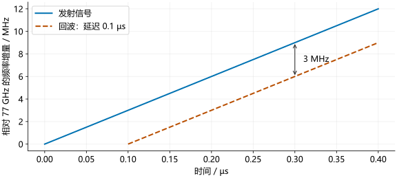

回波与混频¶
发射信号到达物体后，一部分能量反射回雷达。接收天线把回波转换为电信号。先考虑一个静止目标，并假设发射与接收天线相距很近。
回波延迟¶
目标距离为 \(R\) 时，电磁波往返传播约 \(2R\)，所需时间为：
如果目标在 15 m 处，往返路程为 30 m，延迟为：
发射波形
发射信号中的相位和波形为：
\(f_0\) 为起始频率，\(S\) 为扫频斜率，\(\phi_0\) 为初始相位，\(t\) 从这次扫频起点计时。
在时刻 \(t\) 收到的回波，对应的是 \(t-\tau\) 时发出的信号。因此，把发射公式中每个 \(t\) 替换为 \(t-\tau\)，再把发射幅度 \(A\) 换为接收幅度 \(a\)。忽略噪声和额外反射相位，得到：
\(a\) 表示接收到的幅度，通常远小于发射幅度。距离信息包含在时间延迟 \(\tau\) 中。
延迟产生频率差¶
线性扫频时，发射频率不断上升。回波是较早发出的信号，因此在同一个接收时刻，它的频率较低：
这个频率差称为拍频，记作 \(f_b\)。代入往返延迟，得到：
斜率为 30 MHz/µs、距离为 15 m 时，拍频为 \(30\times0.1=3\) MHz。距离增加一倍，拍频也增加一倍。

改变目标距离¶
拖动距离滑块。斜率保持为 30 MHz/µs，虚线的起点随往返延迟向右移动；同一时刻两条线的高度差就是拍频。图中只显示扫频开始后的 0.5 µs。
实线：发射虚线：回波竖线：同一时刻的频率差
混频器怎样提取拍频¶
本机参考信号由雷达自身提供，与发射扫频同步。混频器将它与回波相乘。记两者相位为 \(\phi_{\mathrm{tx}}(t)\)、\(\phi_{\mathrm{rx}}(t)\)，暂时省略时间参数和幅度系数，两个余弦相乘可展开为：
右边第一项的频率是发射与回波的频率差，第二项的频率是两者之和。例如，两路都在 77 GHz 附近、相差 3 MHz 时，差频约为 3 MHz，和频约为 154 GHz。低通滤波器让低频分量通过、衰减高频分量，因而留下用于测距的拍频信号。
对于 77 GHz 附近的雷达信号，混频后的拍频可以只有几 MHz。ADC 因而可以在较低的采样率下记录拍频，而无需直接采集 77 GHz 波形。
拍频信号的相位¶
相减的是哪两个相位
低通滤波后保留 \(\cos\phi_b(t)\)；静止目标的延迟 \(\tau=2R/c\) 在一次扫频内保持不变。
先单独展开回波相位中的平方项：
用发射相位减去回波相位。相同的初始相位 \(\phi_0\) 相消，括号前的减号要作用于回波展开式的每一项：
其中 \(f_0t\) 和 \(St^2/2\) 分别抵消。对静止目标，\(\tau\) 不随时间变化，所以 \(f_0\tau-S\tau^2/2\) 是常数，只有 \(St\tau\) 随时间变化。最后一行将常数记为 \(\phi_c=2\pi(f_0\tau-S\tau^2/2)\)。
相位对时间求导，再除以 \(2\pi\)，得到拍频：
因此，一个静止目标在一次线性扫频内产生近似恒定频率的拍频信号。多个目标的回波叠加后，就会包含多个拍频分量。
Python 示例¶
c = 3e8
slope = 30e12
distance = 15.0
delay = 2 * distance / c
beat_frequency = slope * delay
recovered_distance = c * beat_frequency / (2 * slope)
print(f"延迟：{delay*1e6:.1f} us")
print(f"拍频：{beat_frequency/1e6:.1f} MHz")
print(f"距离：{recovered_distance:.1f} m")
MATLAB 示例¶
c = 3e8;
slope = 30e12;
distance = 15;
delay = 2*distance/c;
beatFrequency = slope*delay;
recoveredDistance = c*beatFrequency/(2*slope);
fprintf('延迟：%.1f us\n', delay*1e6);
fprintf('拍频：%.1f MHz\n', beatFrequency/1e6);
fprintf('距离：%.1f m\n', recoveredDistance);
结果为 0.1 µs、3.0 MHz、15.0 m。这段程序验证了延迟、拍频和距离之间的换算；实际测量中，拍频需要从采样数据估计。
这里采用“发射相位减回波相位”的约定。I/Q 接线和解调约定可以改变频率符号。运动目标还会产生多普勒频移，后面的速度测量将讨论它的影响。原理参考 TI chirp 参数说明。